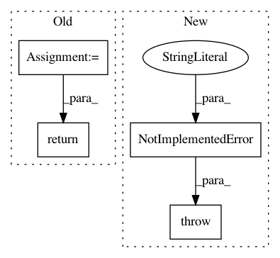

bb099e4c5b48329b842dbf9884f086f7b514bc0a,gpflow/models/model.py,GPModel,predict_f_samples,#GPModel#Any#Any#Any#Any#,112
Before Change
num_elems = tf.shape(var)[1]
var_jitter = ops.add_to_diagonal(var, default_jitter())
L = tf.linalg.cholesky(var_jitter) // [P, N, N]
V = tf.random.normal([num_latent_gps, num_elems, num_samples], dtype=mu.dtype) // [P, N, S]
LV = L @ V // [P, N, S]
mu_t = tf.linalg.adjoint(mu) // [P, N]
return tf.transpose(mu_t[..., np.newaxis] + LV) // [S, N, P]
def predict_y(
self, Xnew: DataPoint, full_cov: bool = False, full_output_cov: bool = False
After Change
Currently, the method does not support `full_output_cov=True` and `full_cov=True`.
if full_cov and full_output_cov:
raise NotImplementedError(
"The combination of both `full_cov` and `full_output_cov` is not supported."
)
// check below for shape info
mean, cov = self.predict_f(Xnew, full_cov=full_cov, full_output_cov=full_output_cov)
if full_cov:
In pattern: SUPERPATTERN
Frequency: 3
Non-data size: 4
Instances
Project Name: GPflow/GPflow
Commit Name: bb099e4c5b48329b842dbf9884f086f7b514bc0a
Time: 2020-03-16
Author: dutordoirv@gmail.com
File Name: gpflow/models/model.py
Class Name: GPModel
Method Name: predict_f_samples
Project Name: ray-project/ray
Commit Name: 5cfa1934e4a2157d07ef534e1033a3f0e5bc1082
Time: 2020-12-18
Author: me@barakmich.com
File Name: python/ray/experimental/client/server/core_ray_api.py
Class Name: CoreRayAPI
Method Name: call_remote
Project Name: GPflow/GPflow
Commit Name: be14d17696f15d11a8075e4943c718320ca97a45
Time: 2019-03-18
Author: art.art.v@gmail.com
File Name: gpflow/conditionals/mo_sample_conditionals.py
Class Name:
Method Name: _sample_conditional